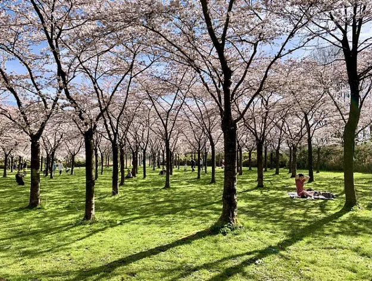
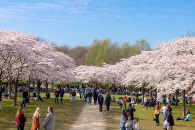

 Het Bloesempark is een park in de Nederlandse gemeente Amstelveen. Het ligt in het zuidoostelijk deel van het Amsterdamse Bos, nabij De Poel ten zuiden van de A9. Ten oosten van het Bloesempark ligt Brug 1545. In het park zijn 400 sierkersen van de hybride Prunis xyedoensis te vinden. Ze zijn geënt op een rechte onderstam. Jaarlijks staan deze bomen ergens in de periode van maart tot april in bloei met roze en witte bloesems. In dit park komen Nederlanders rond de bloeitijd bij elkaar om de hanami matsuri (kersenbloesemfeest) te vieren en op kleedjes te picknicken. In het Bloesempark in het Amsterdamse Bos staan 400 kersenbomen. In het voorjaar kun je er genieten van de prachtige bloesems en het hele jaardoor ademt de plek een bijzondere sfeer.
 Met Hanami Matsuri, ofwel het Kersenbloesemfeest, vieren Japanners de komst van de lente. Het is traditie om met familie en vrienden onder de bloeiende kersenbomen te picknicken. In het jaar 2000 schonk de Japan Women's Club 400 sierkersen van de hybride Prunus xyedoensis aan Amstelveen. Ze zijn geplant in het Bloesempark in het Amsterdamse Bos als dank voor de Japans-Nederlandse betrekkingen. Deze bomen werden voorzien van naambordjes. Op 200 van de bordjes staat een Nederlandse vrouwennaam en op 200 andere een Japanse vrouwennaam.